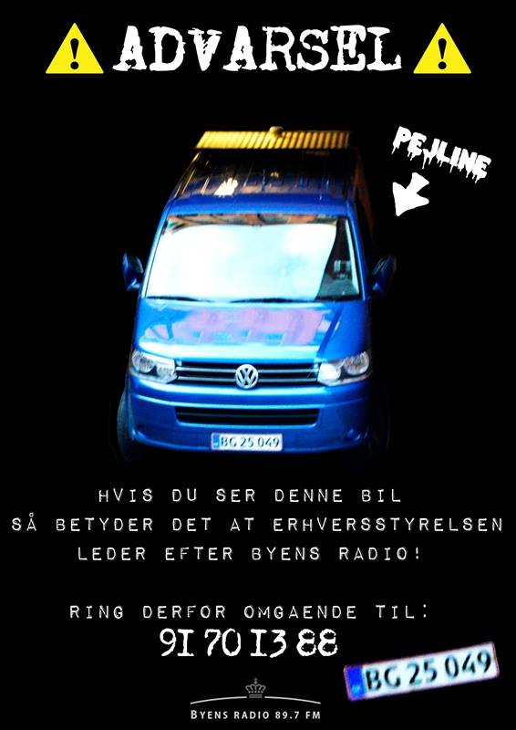

Nytårsnat mellem 2010 og 2011 sendte Byens Radio sine første toner ud i verden. Den sendte fra et ukendt sted i København og kunne kun høres på FM i en radius på 5 km derfra. Efter få måneder blev dog radioen opdaget af medierne, hvilket desværre førte til, at man ikke længe efter sendte erhvervsstyrelsens pejlevogn (læs afsnit: pejline) efter os. Heldigvis lykkedes det at rykke radioen til et nyt sted, og vi undgik både at blive lukket og at få store bøder for at sende uden tilladelse (læs afsnit: ulovligheder i æteren). Med vores nye studie og nogle inkarnerede radiopirater bag mikrofonen og i teknikken, fik vi atter skabt et godt grundlag for en radio, som er til folket af folket.
Byens Radio startede som en reaktion på de kommercielle kanaler, der dengang dominerede FM-båndet. Sendetilladelser var svære og dyre at få og det samme gjaldt copyright-aftaler. Ville man lave en ny radio, skulle man altså enten have en stor sum penge, eller ansøge om at få sendetid på en af Danmarks lokalradioer. Ingen af de to løsninger var realistiske, så Byens Radio gik anderledes til værks og ’besatte’ frekvensen 89,7 FM, der lå uberørt på FM-båndet. Som Mr. Know It All udtalte i et interview til Radio 24/7: ”At have patent på luft, det kan man ikke, derfor tager vi en af de tomme pladser, ligesom hvis man besætter et tomt hus”.
Når man besætter en frekvens, bliver erhvervsstyrelsen underrettet. Erhvervsstyrelsen er i korte træk dem, der skal sørge for, at radiobølgerne forbliver kommercielle, overfladiske og ensrettede. Det gør de ved hjælp af vognen Pejline, som er bygget til at opsnuse og finde de ulovlige bølger, som pirater og radiomus udsender. Når de har opstøvet den antenne, bølgerne kommer fra, sender de først en advarsel, og hvis man ikke reagerer, efterfølges den af bøder på mellem 10 og 50 tusind kroner. Hvis der fortsat sendes radio på frekvensen, kan politiet blive inddraget, hvorefter huset ransages og antennen pilles ned. Det var netop hvad der skete for vores forgængere, der fik sendt ordensmagten efter sig. Efter sigende var årsagen til de drastiske metoder, at bølgerne kunne forstyrre flytrafik og hospitalsmatriale, og at piratradio derfor var en livsfarlig form for aktivisme. Imidlertid var denne lovgivning allerede i 2011 outdatet, da flytrafik såvel som materialer fra hospitaler var blevet meget mere avanceret, og ikke længere kørte på FM-frekvenser.
Udover myndigheder, begyndte de etablerede medier også at finde Byens Radio interessant. Dette har haft stor promoveringsværdi for radioen og har ført til mange kreative interviews. Om det har været i studiet, på taget af et parkeringshus eller noget helt tredje, har man altid kunne regne med, at interviewet er foregået med forskellige folk, under forskellige rammer og omstændigheder. Vi gør nemlig en stor dyd ud af, at vores ansigt udadtil aldrig er det samme. Udover dette er Byens Radios aktivister anonyme, og vi har derfor ikke stået frem med navn til de etableret radiostationer. Dette har dog ikke forhindret os i at have været på Radio 24/7, såvel som P3, og forklare Byens Radios værdier og grundlag. I kan se og høre nogle af vores interviews herunder:
Igennem tiden har Byens Radio haft over 50 redaktioner med ligeså mange forskellige emner og passioner. I blandt dem har været nogle af de sejeste og mest inspirerende aktivister, der alle sammen har været med til at gøre radioen til det, den er. På den politiske linje kan nævnes: Den Queerfeministiske Redaktion (QFR), de g(l)ade udsendte ’Lømlerne’ og analyseprogrammet Lange Ord. Af musiske guldminer har vi haft: Den Anden Verden, Dubkultur og The Bluenette Sisters. For ikke at forglemme radioteatre som Vesterhavstimen. Dette er blot et udpluk af de fantastiske redaktioner, vi har haft gennem tiden. Ja, det er nærmest kun fantasien, der har sat grænser. I Byens Radio er intet for stort eller småt, og det kan man tydeligt høre i et udklip af de nævnte redaktioner herunder:
Efter halvandet år i det nye studie, var der ikke længere mulighed for, at vi kunne være der, og vi måtte ud og lede efter noget nyt. Der var derfor for første gang i over et år stille på frekvensen 89,7 FM, mens vi tænkte over, hvad vi nu skulle gøre. Drømmen om en piratradio, der udfordrede og provokerede det etablerede og konforme samfund var dog stadig i live, og efter godt et halvt år udkom tracket : Vi startede med et brag! Vi hørte i krogene, at der blev afholdt spontane radiolytnings-fester rundt omkring i byen, og vores radiotelefon var rødglødende af de mange sms’er og opkald med ønsker og tilkendegivelser, der kom ind. Vores FM-antenne kørte med over internettet med et nyt system, så det nu var sværere at opspore og på den måde sværere at fange os (læs afsnit: pejline). Efter et år blev radioen dog nødt til at flytte igen og måtte atter sættes på pause. Men nu er vi her, og vi kan kun sige: resten er historie! Du er byen, og det er radio. Byens Radio. Velkommen til fremtiden!